lm(x) and are both orthogonal and normal. They can be obtained by
specifying TWIDDLE normalization to the constructor.
lm(x) and are both orthogonal and normal. They can be obtained by
specifying TWIDDLE normalization to the constructor.
The QAT system (pronouced “cat”) is comprised of packages: QatGenericFunctions QatDataAnalysis, QatDataModelling, QatPlotting, QatPlotWidgets, QatProject, and the optional addon QatInventorWidgets. QAT is a toolkit based upon the Qt system, which is used throughout the toolkit for platform-independent builds, and in parts of the toolkit for plotting.
These are designed to enable function arithmetic, integrating, solution of differential equations, solution of problems in classical mechanics, plotting of functions and data, data analysis and data modeling. I have assembled this package to enable solution to a number of computational problems that arise in graduate physics and engineering, the idea being to fill gaps that are not filled by more standard and widely available packages. The normal order of preference is as follows. Where possible, one uses software from the C++ standard library. Where that fails, one uses widely available software e.g. Boost. After that, one considers other options, free or otherwise. And finally, if all else fails–write the software yourself.
This taxonomy is nuanced, because other considerations arise, namely, a software package should be available in the right language, with and acceptable interface, possibly requiring thread safety, or a certain level of maintenance, and it may drag in unwanted dependencies, including dependencies on packages which are commercial or which have restrictive licenses. Ultimately whether a package is usable is a matter of personal choice, except if the choice is taken by an Organization, in which case it is taken by the Big Bosses.
QAT therefore uses the Gnu Scientific library (gsl) for the implementation of special functions; the Qt Toolkit for graphical user interfaces, the superb Eigen package for matrix manipulation and solution of problems in linear algebra, the HDF5 and/or Root libraries for machine dependent input and output, and MINUIT for function minimization. These classes are mostly hidden from the user–except for Eigen, which we strongly recommend learning and using in parallel with QAT. For users who are adventurous and so inclined, a mastery of the Qt library will be rewarding, since, together with QatPlotWidgets, it will allows decent plotting capabilities to be combined with rich graphical uses interfaces, all of which can be quickly designed using the QtCreator or QtDesigner products.
Therefore a basic working toolkit consists of the packages:
It is often highly useful to visualize calculations in three dimensions. For this purpose we have bundled
The first two items on this list are no longer maintained by the orginal developers, which does represent a serious drawback, though in our opinion they represent the best noncommercial solution, so we maintain and distribute them ourselves. As Wikipedia puts it, “Despite its age, the Open Inventor API is still widely used for a wide range of scientific and engineering visualization systems around the world, having proven itself well designed for effective development of complex 3D application software.” Commericial versions of both APIs are available from the FEI company, for those willing to pay for such a solution.
Always up-to-date installation procedures for MacIntosh and for Linux systems can be found at the website qat.pitt.edu. Support for additional platforms is a future development goal.
The build of Qat, as well as the build of user programs linking agains Qat, uses the multiplatform application system Qt, and especially the qmake procedure. Qmake, starting with a project file, creates a makefile which is platform-specific. The Qat system provides a tool to interactively generate:
To make an almost-empty program, type from the command line
This will conjure a dialog that looks like
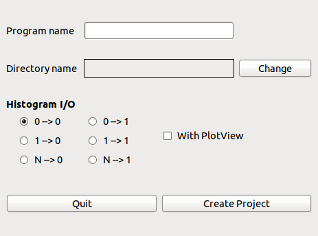
which creates all of the above. It can also automatically include the code for histogram file input and output with options specified on your program’s command line, and/or interactive plotting. When you have created your project, you can build it by typing
The new program lives in PROGRAM/local/bin/program. In case unresolved symbols are reported at runtime, you may need to:
The Qat API is described in the following sections. All of the classes described in this section are scoped within the namespace Genfun.
The QatGenericFunction library contains functors implementing functions of one or more variable. Core functionality is provided by the class AbsFunction, AbsFunctional, AbsParameter, Parameter, Argument, and ArgumentList. In addition to that, a number of classes such as FunctionSum, FunctionDifference, FunctionDirectProduct, etc., which are necessary for the basic functionality of the library, are “internal” and are not described here.
__________________________________________________________________________________________________________
#include “QatGenericFunctions/AbsFunction.h”
Description AbsFunction is the base class for all function objects. The functions they represent may take one or more variable as an argument; in case of functions of more than one variable, the class Argument is used to aglomerate variables into a single structure. The four basic operations (+,-,*,/) are defined for all AbsFunctions, and operands may be either
AbsFunctions can be composed with each other; eg. g=f(h) where f,g, and h are AbsFunctions. Also, the direct product operator (%) forms the direct product (f%g) of two AbsFunctions and therefore can be used to build multivariate functions from univariate functions. The result of such operations is most convieniently typed as GENFUNCTION, typedef’d back to const AbsFunction &.
The QatGenericFunction library is endowed with an automatic derivative system, which allows to obtain the derivative (partial derivative for functions of more than one variable).
Copy constructor
Destructor
Dimensionality
Function value
Clone
Function composition. The return value (FunctionComposition) is a type of AbsFunction.
Parameter composition. The return value (ParameterComposition) is a type of AbsParameter (see below).
Derivatives. The return value (Derivative) is a type of AbsFunction.
Test for analytic derivative
Functions The following list of functions implements the function algebra described above. The return types for all of these functions are all a type of AbsFunction.
__________________________________________________________________________________________________________
#include “QatGenericFunctions/AbsParameter.h”
Description AbsParameter is a base class for parameters. A parameter is a class with a directly or indirectly adjustable value. It may appear in expressions with other AbsParameters; then when one of the AbsParameter values changes the expression is automatically updated. AbsParameters also can be used in expressions with functions. When a parameter changes value, the expression changes shape. See also Parameter.
Typedefs typedef const AbsParameter & GENPARAMETER
Copy Constructor:
Destructor:
Clone:
Get parameter value:
Functions The following list of functions implements the function algebra described above. The return types for all of these functions are all a type of AbsParameter.
__________________________________________________________________________________________________________
#include “QatGenericFunctions/AbsFunctional.h”
Description AbsFunctional is a base class for functionals, i.e. objects that act upon a function to obtain a real number.
Destructor:
Function call operator:
__________________________________________________________________________________________________________
#include “QatGenericFunctions/Argument.h”
Description Argument represents the argument to a function, agglomerating one or more variables. For example, a function of two variables expects a two-element argument.
Initializer list constructor:
Copy Constructor
Assignment operator
Destructor:
Set/Get Value
Get the dimensions
__________________________________________________________________________________________________________
#include “QatGenericFunctions/ArgumentList.h”
Description The class ArgumentList is an std::vector of Arguments:
__________________________________________________________________________________________________________
#include “QatGenericFunctions/CutBase.h”
Description Cut is a template class, parameterized on a class Type, the type of thing upon which one desires to cut. Its function call operator evaluates to true or false. Uses of this class should instantiate the class on a concrete datatype, and then derive subclasses implementing actual cuts. The advantage is that the derived subclasses obey a boolean algebra, i.e. respond to the operators ||, &&, and !.
Copy Constructor:
Destructor
Clones the cut:
Function call operator:
OR operation (return value is a Cut<Type>):
AND operation (return value is a Cut<Type>):
NOT operation (return value is a Cut<Type>):
__________________________________________________________________________________________________________
#include “QatGenericFunctions/Parameter.h”
Description This class is a simple low-level double precision number, together with some limiting values. It is designed essentially as an ingredient for building function objects. Parameters can be connnected to one another and combined in algebraic expressions with constants and with other parameters. If a parameter is connected, it takes is value (and limits) from the parameter to which it is connected. It can be disconnected by connecting to NULL. When disconnected, it captures the values of the connected field before dropping the connection. An attempt to alter the values of the field while the Parameter is connected to another parameter will result in an obnoxious warning mesage.
Copy constructor
Destructor
Assignment
Accessor for the Parameter name
Accessor for value
Accessor for Lower Limit
Accessor for Upper Limit
Set Value
Set Lower Limit
Set Upper Limit
Take values + limits from some other parameter.
__________________________________________________________________________________________________________
#include “QatGenericFunctions/Defs.h”
Description The NormalizationType is used in the constructor of certain orthogonal polynomials. STD means to construct the standard polynomial, i.e. unnormalized, and TWIDDLE means to construct normalized orthogonal polynomials.
__________________________________________________________________________________________________________
The classes in this section implement specific mathematical functions, like sin, cos, exp, and other basic and transcendental functions, all inheriting from AbsFunction. Where possible we have taken the actual computation from the runtime library; when no such function exists we prefer to take the implementation from the gnu scientific library (GSL); when none can be found we implement our own.
Some functions (e.g. AssociatedLegendrePolynomial) have constructors taking arguments (like the order and degree of the polynomial); others may have internal parameters that affect the shape of the function. These parameters may be set to the desired value or connected to other parameters as desired.
__________________________________________________________________________________________________________
#include “QatGenericFunctions/Abs.h”
Description: Takes the absolute value of the argument.
Implementation: Calls std::abs
Dimensionality: Function of one variable.
__________________________________________________________________________________________________________
#include “QatGenericFunctions/Airy.h”
Description: Implements the Airy functions Ai(x) and Bi(x).
Enums: enum Type {FirstKind,SecondKind}
Implementation: Calls gsl_sf_airy_ai_e or gsl_sf_airy_bi_e from the gnu scientific library.
Dimensionality: Function of one variable.
Methods: Constructor. Type may be Airy::Ai or Airy::Bi.
__________________________________________________________________________________________________________
#include “QatGenericFunctions/ACos.h”
Description: Takes the arc cosine of its argument.
Implementation: Calls std::acos.
Dimensionality: Function of one variable.
Computes the derivative analytically. Requires an argument of 0. Called by the method AbsFunction::prime() const.
__________________________________________________________________________________________________________
#include “QatGenericFunctions/ACosh.h”
Description: Takes the inverse hyperbolic cosine of its argument.
Implementation: Calls std::acosh.
Dimensionality: Function of one variable.
Computes the derivative analytically. Requires an argument of 0. Called by the method AbsFunction::prime() const.
#include “QatGenericFunctions/ArrayFunction.h”
Description: The ArrayFunction takes its values from an array, which it copies in.
Implementation: Native implementation.
Dimensionality: Function of one variable.
Initializer list constructor:
__________________________________________________________________________________________________________
#include “QatGenericFunctions/ASin.h”
Description: Takes the arc sine of its argument.
Implementation: Calls std::asin
Dimensionality: Function of one variable
Computes the derivative analytically. Requires an argument of 0. Called by the method AbsFunction::prime() const .
__________________________________________________________________________________________________________
#include “QatGenericFunctions/ASinh.h”
Description: Takes the inverse hyperbolic sine of its argument.
Implementation: Calls std::asinh
Dimensionality: Function of one variable
Computes the derivative analytically. Requires an argument of 0. Called by the method AbsFunction::prime() const .
__________________________________________________________________________________________________________
#include “QatGenericFunctions/AssociatedLaguerrePolynomial.h”
Description: Implements the associated Laguerre polynomial, Lnα(x) of degree n and constant α. These polynomials are orthogonal and with the standard normalization the orthogonality relation is
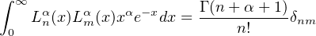
Normalized associated Laguerre polynomials are denoted as
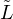
nα(x) and are both orthogonal and normal. They can be obtained by specifying TWIDDLE normalization to the constructor.Implementation: Calls the function gsl_sf_laguerre_n_e from the gnu scientific library (GSL).
Dimensionality: Function of one variable.
Methods: Constructor taking the degree n and the constant a. Normalization type specifies non-normalized (STD) or normalized (TWIDDLE) orthogonal polynomials.
Get the degree n:
Get the constant a:
Computes the derivative analytically. Requires an argument of 0. Called by the method AbsFunction::prime() const .
__________________________________________________________________________________________________________
#include “QatGenericFunctions/AssociatedLegendre.h”
Description: Implements the associated Legendre function, Plm(x) of degree l and order m. These functions are orthogonal with the standard normalization the orthogonality relation:
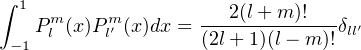
Normalized associated Legendre functions are denoted as lm(x) and are both orthogonal and normal. They can be obtained by
specifying TWIDDLE normalization to the constructor.
Implementation: Calls the function gsl_sf_legendre_Plm_e or gsl_sf_legendre_sphPlm_e from the gnu scientific library (GSL), according to whether the polynomial is normalized (TWIDDLE) or nonnormalized (STD).
Dimensionality: Function of one variable.
Methods: Constructor taking the degree l and the order m. Normalization type specifies non-normalized (STD) or normalized (TWIDDLE) orthogonal polynomials.
Get the degree l:
Get the order m:
Computes the derivative analytically. Requires an argument of 0. Called by the method AbsFunction::prime() const .
__________________________________________________________________________________________________________
#include “QatGenericFunctions/ATan.h”
Description: Takes the arc tangent of its argument.
Implementation: Calls std::atan
Dimensionality: Function of one variable
Computes the derivative analytically. Requires an argument of 0. Called by the method AbsFunction::prime() const .
__________________________________________________________________________________________________________
#include “QatGenericFunctions/ATanh.h”
Description: Takes the inverse hyperbolic tangent of its argument.
Implementation: Calls std::atanh
Dimensionality: Function of one variable.
Computes the derivative analytically. Requires an argument of 0. Called by the method AbsFunction::prime() const .
__________________________________________________________________________________________________________
#include “QatGenericFunctions/Bessel.h”
Description: Bessel functions of fractional order. Bessel functions of the first kind and also Bessel functions of the second kind (also called Neumann functions) can be constructed. The order of the Bessel function is an adjustable parameter of class FractionalOrder::Bessel.
Implementation: Calls the function gsl_sf_bessel_Jnu_e or gsl_sf_bessel_Ynu_e from the gnu scientific library.
Dimensionality: Function of one variable.
Enums: enum Type {FirstKind,SecondKind}
Returns the (fractional) order of the Bessel function. Default value is 0.0;
Computes the derivative analytically. Requires an argument of 0. Called by the method AbsFunction::prime() const.
__________________________________________________________________________________________________________
#include “QatGenericFunctions/Bessel.h”
Description: Bessel functions of integral order. Bessel functions of the first kind and also Bessel functions of the second kind (also called Neumann functions) can be constructed.
Implementation: Calls the function gsl_sf_bessel_Jn_e or gsl_sf_bessel_Yn_e from the gnu scientific library.
Dimensionality: Function of one variable
Methods: Constructor. Parameters are the order (n) and the type:
Computes the derivative analytically. Requires an argument of 0. Called by the method AbsFunction::prime() const.
__________________________________________________________________________________________________________
#include “QatGenericFunctions/BetaDistribution.h”
Description: The Beta distribution is a normalized probability distribution f(x) given by
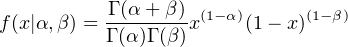
It is parametrized by the constants α and β.
Implementation: Native implementation.
Dimensionality: Function of one variable.
Get the parameter alpha. Default value is 1.0.
Get the parameter beta. Default value is 1.0.
__________________________________________________________________________________________________________
#include “QatGenericFunctions/Cos.h”
Description: Takes the cosine of its argument.
Implementation: Calls std::cos.
Dimensionality: Function of one variable.
Computes the derivative analytically. Requires an argument of 0. Called by the method AbsFunction::prime() const.
__________________________________________________________________________________________________________
#include “QatGenericFunctions/Cosh.h”
Description: Takes the hyperbolic cosine of its argument.
Implementation: Calls std::cosh.
Dimensionality: Function of one variable.
Computes the derivative analytically. Requires an argument of 0. Called by the method AbsFunction::prime() const.
__________________________________________________________________________________________________________
#include “QatGenericFunctions/CubicSplinePolynomial.h”
Description: This function represents the natural cubic spline interpolating a series of control points. A typical use case is to instantiate the function, then add the required control points, then evaluate the function.
Implementation: Native. Uses the Eigen package for matrix operations, internally.
Dimensionality: Function of one variable.
Add a new point to the set:
Determine the range of interpolation. This is the minimum and maximum abscissa of all the points added so far.
__________________________________________________________________________________________________________
#include “QatGenericFunctions/CumulativeChiSquare.h”
Description: Cumulative χ2 distribution for N degrees of freedom, also called the probability chi square.
Implementation: Native; uses Genfun::IncompleteGamma.
Dimensionality: Function of one variable.
Get the number of degrees of freedom (nDof):
__________________________________________________________________________________________________________
#include “QatGenericFunctions/EllipticIntegral.h”
Description: Elliptic integral of the first kind
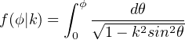
Implementation: Calls the function gsl_sf_ellint_F_e from the gnu scientific library (GSL).
Dimensionality: Function of one variable.
Get the k-parameter. Default value = 1.0.
__________________________________________________________________________________________________________
#include “QatGenericFunctions/EllipticIntegral.h”
Description: Elliptic integral of the second kind
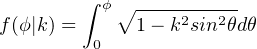
Implementation: Calls the function gsl_sf_ellint_E_e from the gnu scientific library (GSL).
Dimensionality: Function of one variable.
Get the k-parameter. Default value = 1.0.
__________________________________________________________________________________________________________
#include “QatGenericFunctions/EllipticIntegral.h”
Description: Elliptic integral of the third kind
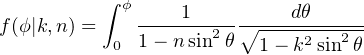
Implementation: Calls the function gsl_sf_ellint_P_e from the gnu scientific library (GSL).
Dimensionality: Function of one variable.
Get the k-parameter. Default value = 1.0.
Get the n-parameter. Default value = 1.0.
__________________________________________________________________________________________________________
#include “QatGenericFunctions/Erf.h”
Description: Takes the error function of its argument.
Implementation: Calls std::erf.
Dimensionality: Function of one variable.
Computes the derivative analytically. Requires an argument of 0. Called by the method AbsFunction::prime() const.
__________________________________________________________________________________________________________
#include “QatGenericFunctions/Exp.h”
Description: Takes the exponential function of its argument.
Implementation: Calls std::exp.
Dimensionality: Function of one variable.
Computes the derivative analytically. Requires an argument of 0. Called by the method AbsFunction::prime() const.
__________________________________________________________________________________________________________
#include “QatGenericFunctions/F1D.h”
Description: F1D is an adaptor. Its constructor takes an ordinary function pointer and turns it into an AbsFunction, endowed with the normal algebraic and analytic operations of all AbsFunctions. The derivative of an F1D is taken numerically.
Implementation: Native implementation
Dimensionality: Function of one variable.
Methods: Constructor. Usage example: F1D f=std::sin
__________________________________________________________________________________________________________
#include “QatGenericFunctions/F2D.h”
Description: F2D is an adaptor. Its constructor takes an ordinary function pointer (to a function of two double precision arguments) and turns it into an AbsFunction, endowed with the normal algebraic and analytic operations of all AbsFunctions. Partial derivatives of an F2D is taken numerically.
Implementation: Native implementation
Dimensionality: Function of two variable.
Methods: Constructor. Usage example: F2D f=std::atan2
__________________________________________________________________________________________________________
#include “QatGenericFunctions/FixedConstant.h”
Description: FixedConstant describes function whose value is fixed and does not depend upon its argument; one can also describe it as a zeroth-order polynomial.
Dimensionality: Function of one variable.
Methods: Constructor. Requires the value of the constant.
Computes the derivative analytically. Requires an argument of 0. Called by the method AbsFunction::prime() const.
__________________________________________________________________________________________________________
#include “QatGenericFunctions/.h”
Description: Implements the gamma function,
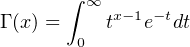
which obeys the relation
Implementation: Calls std::tgamma.
Dimensionality: Funcion of one variable
__________________________________________________________________________________________________________
#include “QatGenericFunctions/HermitePolynomial.h”
Description: Implements the Hermite polynomial, Hn(x) of order n. These polynomials are orthogonal and with the standard normalization the orthogonality relation is
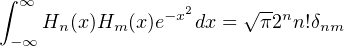
Normalized Hermite polynomials are denoted as
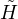
n(x) and are both orthogonal and normal. They can be obtained by specifying TWIDDLE normalization to the constructor.Dimensionality: Function of one variable.
Methods: Constructor taking the order n. Normalization type specifies non-normalized (STD) or normalized (TWIDDLE) orthogonal polynomials.
Get the order n:
Computes the derivative analytically. Requires an argument of 0. Called by the method AbsFunction::prime() const .
__________________________________________________________________________________________________________
#include “QatGenericFunctions/IncompleteGamma.h”
Description: Implements one of the following functions; the choice being specfied in the constructor:
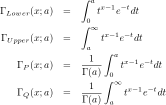
Implementation: Calls gsl_sf_gamma_inc_e, gsl_sf_gamma_inc_e, or gsl_sf_gamma_inc_e from the gnu scientific library (GSL)
Dimensionality: Function of one variable.
Get the parameter a:
Computes the derivative analytically. Requires an argument of 0. Called by the method AbsFunction::prime() const .
__________________________________________________________________________________________________________
#include “QatGenericFunctions/InterpolatingFunction.h”
Description: This class implements multiple interpolation schemes, including the Lagrange interpolating polynomial (default), straight line interpolation between points, natural cubic spline interpolation, Non-rounded natural akima spline, cubic spline with periodic boundary conditions, and akima spline with periodic boundary conditions. The choice is made in the constructor. See also: class InterpolatingPolynomial, class CubicSplinePolynomial.
Implementation: Calls gsl_spline_init and gsl_spline_eval from the gnu scientific library(GSL).
Dimensionality: Function of one variable.
Add a point through which to interpolate:
Get the range:
Get extreme points maximum and minimum. Abscissa and ordinate:
__________________________________________________________________________________________________________
#include “QatGenericFunctions/InterpolatingPolynomial.h”
Description: Interpolates between points (ordinate & abscissa) using the Lagrange interpolating polynomial.
Dimensionality: Function of one variable.
Add a new point to the set:
Get the range:
Get an estimate of the interpolation error. A positive number:
__________________________________________________________________________________________________________
#include “QatGenericFunctions/LegendrePolynomial.h”
Description: mplements the Legendre polynomial, Pn(x) of order n. These polynomials are orthogonal and with the standard normalization the orthogonality relation is
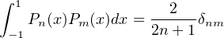
Normalized Legendre polynomials are denoted as
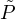
n(x) and are both orthogonal and normal. They can be obtained by specifying TWIDDLE normalization to the constructor.Implementation: Calls gsl_sf_legendre_Pl_e from the gnu scientific library.
Dimensionality: Function of one variable.
Methods: Constructor. l is the order of the polynomial, normalization type may be STD or TWIDDLE.
Get the order l of the polynomial:
Computes the derivative analytically. Requires an argument of 0. Called by the method AbsFunction::prime() const .
__________________________________________________________________________________________________________
#include “QatGenericFunctions/LGamma.h”
Description: Computes the log of the gamma function (see above).
Implementation: Calls std::lgamma.
Dimensionality: Function of one variable.
__________________________________________________________________________________________________________
#include “QatGenericFunctions/Log.h”
Description: Computes the natural (!) log of its argument.
Implementation: Calls std::log.
Dimensionality: Function of one variable.
Computes the derivative analytically. Requires an argument of 0. Called by the method AbsFunction::prime() const .
__________________________________________________________________________________________________________
Description: Computes the remainder under floored division by a divisor which is specified in the constructor.
Implementation: Native; calls the floor function from the standard math library.
Dimensionality: Function of one variable.
__________________________________________________________________________________________________________
#include “QatGenericFunctions/.h”
Description: Implements a normal distribution, or Gaussian distribution. Parameterized by mean and sigma.
Dimensionality: Function of one variable.
Get the mean of the normal distribution:
Get the sigma of the NormalDistribution
Computes the derivative analytically. Requires an argument of 0. Called by the method AbsFunction::prime() const .
__________________________________________________________________________________________________________
#include “QatGenericFunctions/Pi.h”
Description: Computes the product of a set of functions:
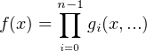
Dimensionality: Function of one or more variables, depending upon the functions which compose the product. Note that this is not a direct product, all of the functions gi(x,...)must have the same dimensionality. Direct products can be implemented with the % operator.
Add a function to the product; the following two forms are completely equivalent:
Computes the derivative analytically. Called by the method AbsFunction::prime() const .
__________________________________________________________________________________________________________
#include “QatGenericFunctions/Power.h”
Description: Takes its argument to the nth power, i.e. computes xn. The exponent n may be double or integral.
Implementation: Calls std::pow.
Dimensionality: Function of one variable.
Computes the derivative analytically. Requires an argument of 0. Called by the method AbsFunction::prime() const .
__________________________________________________________________________________________________________
#include “QatGenericFunctions/Polynomial.h”
Description: Implements a polynomial function anxn + an-1xn-1... + a1x + a0. The polynomial is specified by its coefficients which are given in the constructor. The coefficient an is given first in the list, followed by an-1and so on down to a0, which should appear last in the list used to initialize the polynomial.
Dimensionality: Function of one variable.
Get the roots of this polynomial:
Get the companion matrix (see Press et al, Numerical Recipes, 3rd Edition, Cambridge University Press , 2007, section 9.5.4):
Get the coefficients of the derivative of the polynomial:
Computes the derivative analytically. Requires an argument of 0. Called by the method AbsFunction::prime() const .
__________________________________________________________________________________________________________
#include “QatGenericFunctions/Sgn.h”
Description: A function that returns the sign of its argument: -1 for x<0; +1 for x>0.
Dimensionality: Function of one variable.
__________________________________________________________________________________________________________
#include “QatGenericFunctions/Sigma.h”
Description: Computes the sum of a set of functions:
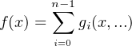
Dimensionality: Function of one or more variables, depending upon the functions which compose the sum.
Add a function to the sum; the following two forms are completely equivalent:
Computes the derivative analytically. Called by the method AbsFunction::prime() const .
__________________________________________________________________________________________________________
#include “QatGenericFunctions/Sin.h”
Description: Takes the sine of its argument.
Implementation: Calls std::sin.
Dimensionality: Function of one variable.
Computes the derivative analytically. Requires an argument of 0. Called by the method AbsFunction::prime() const.
__________________________________________________________________________________________________________
#include “QatGenericFunctions/Sinh.h”
Description: Takes the hyperbolic sine of its argument.
Implementation: Calls std::sinh.
Dimensionality: Function of one variable.
Computes the derivative analytically. Requires an argument of 0. Called by the method AbsFunction::prime() const.
__________________________________________________________________________________________________________
#include “QatGenericFunctions/Sqrt.h”
Description: Takes the positive square root of its argument.
Implementation: Calls std::sqrt.
Dimensionality: Function of one variable.
Computes the derivative analytically. Requires an argument of 0. Called by the method AbsFunction::prime() const.
__________________________________________________________________________________________________________
#include “QatGenericFunctions/Square.h”
Description: Takes the square of its argument.
Dimensionality: Function of one variable.
Computes the derivative analytically. Requires an argument of 0. Called by the method AbsFunction::prime() const.
__________________________________________________________________________________________________________
#include “QatGenericFunctions/Tan.h”
Description: Takes the tangent of its argument.
Implementation: Calls std::tan.
Dimensionality: Function of one variable.
Computes the derivative analytically. Requires an argument of 0. Called by the method AbsFunction::prime() const.
__________________________________________________________________________________________________________
#include “QatGenericFunctions/Tanh.h”
Description: Takes the hyperbolic tangent of its argument.
Implementation: Calls std::tanh.
Dimensionality: Function of one variable.
Computes the derivative analytically. Requires an argument of 0. Called by the method AbsFunction::prime() const.
__________________________________________________________________________________________________________
#include “QatGenericFunctions/TchebyshevPolynomial.h”
Description: Implements the Tchebyshev polynomials of the first kind, Tn(x) of order n, and Tchebyshev polynomials of the second kind, Un(x). The choice is made in the constructor. These polynomials are orthogonal and with the standard normalization the orthogonality relation is
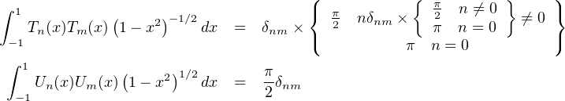
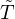
n(x) (first kind) and Ũn(x) (second kind). and are both orthogonal and normal. They can be obtained by specifying TWIDDLE normalization to the constructor.Dimensionality: Function of one variable.
Methods: Constructor. The first argument is the order of the polynomial, second argument is the type, third argument is the normalization.
Get the integer variable n:
Get the type
Computes the derivative analytically. Requires an argument of 0. Called by the method AbsFunction::prime() const .
__________________________________________________________________________________________________________
#include “QatGenericFunctions/Theta.h”
Description: Implements the theta function, also known as the Heaviside step function, which is 0 for x<0 , 1 for x ≥ 0. This function may be useful in constructing functions whose form in two regions is different. For example, if f(x) = g(x) when x < a, and f(x) = h(x) when x ≥ a, we can construct f(x) as
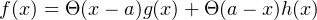
Dimensionality: Function of one variable.
Computes the derivative analytically. Requires an argument of 0. Called by the method AbsFunction::prime() const .
__________________________________________________________________________________________________________
#include “QatGenericFunctions/Variable.h”
Description: Variable represents a variable in an expression, or one variable within a set of variables used to form an expression. In the first case, it simply returns its argument. In the second, it returns one of a set of n arguments which are passed in an Argument to a function. The dimensionality is determined by the constructor; the constructor with default values of both arguments, builds a simple variable used most frequently to construct functions of one dimension. Below we give examples of both use cases.
Example 1: Variables for functions of a single variable
Example 2: Variables for functions of two variables
The function F in the above example can alternately be constructed with the direct product operation, i.e.
Dimensionality: Function of one or more variables, depending upon the constructor call.
Methods: Constructors. First variable gives the index of the variable within a set of variables, second variable gives the number of variables in the set.
Returns the selectionIndex:
Computes the derivative analytically. Called by the method AbsFunction::prime() const (in case of functions of one variable).
__________________________________________________________________________________________________________
#include “QatGenericFunctions/Voigt.h”
Description: The Voigt distribution is the convolution of a Gaussian with a Lorentzian (or Breit-Wigner, or Cauchy) distribution. It is characterized by the natural width of the Lorentzian and the width of the convolving Gaussian.
Dimensionality: Function of one variable.
Get the parameter delta (width of Cauchy/Lorentian/Breit-Wigner)
Get the parameter (width of Gaussian/normal)
__________________________________________________________________________________________________________
The QatGenericFunctions classes are designed to be used by composition. For example, while the function log10(x) does not exist in the library, it can be easily manfactured by using the relationship
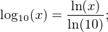
in code,
In some cases, however, it may be necessary or desirable to create your own function-object. This can be done by inheriting from the class Genfun::AbsFunction. The usual steps are necessary: declare you class, inherit publically from the base class, implement all of the required pure virtual functions:
and override any virtual function that you wish to override. The candidates are these:
Two macros are provided for convenience:
Finally, a command-line tool called qat-function is provided for your convenience. It generates all the boilerplate for a new customized function, putting the declaration in a header file and the implementation in a source (.cpp) file. The command is set up to generate the boilerplate for a function of one dimension that does not provide an analytic derivative. You may change this as needed. The syntax for the command is:
The source code and header files FunctionName.cpp and FunctionName.h appear in the working directory. Edit those files to complete the implementation of your new class, which will then interoperate with all of the other function classes in the Genfun namespace.
This section documents the class SimpleIntegrator, which operates together with the class QuadratureRule and its subclasses; also the class GaussIntegrator which operates together with the class GaussQuadratureRule and its subclasses, and also the class RombergIntegrator.
The SimpleIntegrator applies classical quadrature rules and gives programmers full control over the approximate integration. The GaussIntegrator applies Gauss-Legendre, Gauss-Tchebyshev, Gauss-Hermite, or Gauss-Laguerre integration. The RombergIntegrator applies Romberg integration, which is an automatic integration scheme which subdivides the mesh iteratively until a convergence criterion is satisfied.
Class tree diagrams appear in Fig. 1 for the QuadratureRule class and subclasses and in Fig. 2 for the GaussQuadratureRule class and subclasses.
#include “QatGenericFunctions/SimpleIntegrator.h”
Description: This class uses a quadrature rule to compute the integral of a function over a specified range, by applying the quadrature rule within a specified number of intervals. If no quadrature rule is provided, then by default this integrator will use the trapezoid rule. If the number of intervals is not specified, the integrator will use a default of 26=64.
Methods: Constructor. Constructs an integrator with lower limit a and upper limit b; applies the quadrature rule rule with nIntervals intervals.
The function call operator integrates the function:
__________________________________________________________________________________________________________
#include “QatGenericFunctions/RombergIntegrator.h”
Description: This class uses Romberg integration to compute the integral of a function over a specified range. Either an open or a closed quadrature rule can be used; the closed quadrature rule generally converges faster but the open quadrature rule can be applied in cases where the integrand is infinite at one of the endpoints. Convergence is acheived when either the estimated error absolute value of the integral or the fractional value of the integral are less than the requested precision (10-6 by default). For integrals with a value near to zero, a convergence criterion of ABSOLUTE is recommended.
Methods:- Constructor. Constructs an integrator with lower limit a and upper limit b, with type OPEN or CLOSED, and convergence criterion ABSOLUTE or RELATIVE
The function call operator integrates the function:
Retrieves the number of function calls to the integrand function, after the integration has been performed:
Sets the desired precision. Default is 10-6:
Sets the maximum number of iterations before bailout. Default is 20 (closed integration) or 14 (open integration)
Sets the minimum order of integration. Default is 10:
__________________________________________________________________________________________________________
#include “QatGenericFunctions/QuadratureRule.h”
Description: Abstract base class representing a classical quadrature rule. QuadratureRules provide abscissas and weights for integration. They imply extended quadrature rules when used with the SimpleIntegrator.
Access the size of the quadrature rule, i.e. the number of abscissas and weights.
Access the abscissas:
Access the weights:
__________________________________________________________________________________________________________
#include “QatGenericFunctions/QuadratureRule.h”
Description: Implements the trapezoid rule, a closed second-order Newton-Cotes quadrature rule.
__________________________________________________________________________________________________________
#include “QatGenericFunctions/QuadratureRule.h”
Description: Implements the open trapezoid rule, an open second-order Newton-Cotes quadrature rule.
__________________________________________________________________________________________________________
#include “QatGenericFunctions/QuadratureRule.h”
Description: Implements the midpoint rule, an open second-order Newton-Cotes quadrature rule.
__________________________________________________________________________________________________________
#include “QatGenericFunctions/QuadratureRule.h”
Description: Implements Simpson’s rule, a closed fourth-order Newton-Cotes quadrature rule.
__________________________________________________________________________________________________________
#include “QatGenericFunctions/GaussIntegrator.h”
Description: Performs Gaussian integration. The interval over which integration is performed depends upon the integration scheme, which in turn is determined by the GaussQuadratureRule. The GaussLegendreRule performs Gauss-Legendre integration on the interval [-1,1], the GaussHermiteRule performs Gauss-Hermite integration on the interval [-∞,∞],etc.
Methods: Constructor. The GaussQuadratureRule determines the integration scheme and upper and lower bounds of the integral. The type determines whether the function f(x) is to be integrated on its own, ∫ f(x)dx , or whether it is to be integrated together with the weight function w(x), i.e. integrated ∫ f(x)w(x)dx. A type of INTEGRATE_DX specfies the former case, INTEGRATE_WX_DC the latter case.
The function call operator integrates the function:
__________________________________________________________________________________________________________
#include “QatGenericFunction/GaussQuadratureRule.h”
Description: A abstract base class for Gaussian integration. This class holds much of the functionality for determining the abscissas and weights for Gaussian integration, so that subclasses need only furnish few pieces of information concerning the orthogonal polynomials upon which their rule is based. These include the coefficients ai,bi,ci of the three-term recurrence relation; the natural logarithm of the normalization constant, the limits of integration, the weight function, and the integral of the weight function. The GaussIntegrator uses the weight function, the limits, the abscissas, and the weights in carrying out the integration.
Methods: Constructor. Note that since the class is abstract, only the subclasses can construct.
Access the name:
Access limits of integration associated with the integration scheme:
Coefficients in the three-term recurrence relation pi+1(x) =
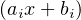
pi(x) - cipi-1(x) ; provided by subclasses.Access the natural log of the normalization constant log(Ni) = log(∫ pi(x)pi(x)dx. The logarithm is taken since the constants can become very large for some of the orthogonal polynomials.
Access the integrated weight; provided by subclasses: μ =
| ∫ w(x)dx |
Access the weight function w(x); provided by subclasses:
Access the number of points:
Access abscissa
Access weight:
__________________________________________________________________________________________________________
#include “QatGenericFunctions/GaussQuadratureRule.h”
Description: A Gaussian quadrature rule implementing Gauss-Legendre integration on the interval [-1,1], based upon Legendre polynomials. The weight function for Legendre polynomials is w(x) = 1.0; i.e. it is flat.
Methods: Constructor. Argument to the constructor is the number of points.
Coefficients in the three-term recurrence relation pi+1(x) =  pi(x) - cipi-1(x) ;provided by subclasses. For Legendre polynomials
ai =
pi(x) - cipi-1(x) ;provided by subclasses. For Legendre polynomials
ai =
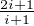
; bi = 0, and ci =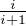
Access the natural log of the normalization constant log(Ni) = log(∫
pi(x)pi(x)dx. For Legendre polynomials logNi =  log
log
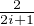
.Access the integrated weight: μ =
| ∫ w(x)dx |
__________________________________________________________________________________________________________
#include “QatGenericFunctions/GaussQuadratureRule.h”
Description: A Gaussian quadrature rule implementing Gauss-Hermite integration on the interval [-∞,∞], based upon Hermite polynomials. The weight function for Hermite polynomials is w(x) = e-x2 .
Methods: Constructor. Argument to the constructor is the number of points.
Coefficients in the three-term recurrence relation pi+1(x) =  pi(x) - cipi-1(x) ;provided by subclasses. For Hermite polynomials
ai = 2; bi = 0, and ci = 2i
pi(x) - cipi-1(x) ;provided by subclasses. For Hermite polynomials
ai = 2; bi = 0, and ci = 2i
Access the natural log of the normalization constant log(Ni) = log(∫
pi(x)pi(x)w(x)dx. For Hermite polynomials
logNi =  (logπ + ilog2 + log(Γ(i + 1)).
(logπ + ilog2 + log(Γ(i + 1)).
Access the integrated weight: μ =
| ∫ w(x)dx |
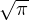
__________________________________________________________________________________________________________
#include “QatGenericFunctionsGaussQuadratureRule.h”
Description: A Gaussian quadrature rule implementing Gauss-Tchebyshev integration on the interval [-1,1], based upon Tchebyshev polynomials of the first or second kind, the choice being taken with the constructor. The weight function for Tchebyshev polynomials of the first kind is w(x) =
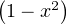
-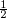
; for Tchebyshev polynomials of the second kind is w(x) =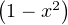
 .
.
Methods:
Constructor. Argument to the constructor is the number of points, and the type, which can take values
TchebyshevPolynomial::FirstKind or TchebyshevPolynomial::SecondKind.
Coefficients in the three-term recurrence relation pi+1(x) =  pi(x) -cipi-1(x) ;provided by subclasses. For Tchebyshev polynomials
of the first kind, a0 = 1;ai = 2 (i≠0) bi = 0, and ci = 1; for Tchebyshev polynomials of the second kind, ai = 2, bi = 0, and ci = 1;
for
pi(x) -cipi-1(x) ;provided by subclasses. For Tchebyshev polynomials
of the first kind, a0 = 1;ai = 2 (i≠0) bi = 0, and ci = 1; for Tchebyshev polynomials of the second kind, ai = 2, bi = 0, and ci = 1;
for
Access the natural log of the normalization constant log(Ni) = log(∫
pi(x)pi(x)w(x)dx. For Tchebyshev polynomials of the first kind,
logNi =  logπ if i = 0 and logNi =
logπ if i = 0 and logNi =  log
log if i≠0; for Tchebyshev polynomials of the second kind, logNi =
if i≠0; for Tchebyshev polynomials of the second kind, logNi =  log
log .
.
Access the integrated weight: μ =
| ∫ w(x)dx |
__________________________________________________________________________________________________________
#include “QatGenericFunctions/GaussQuadratureRule.h”
Description: A Gaussian quadrature rule implementing Gauss-Laguerre integration on the interval [0,∞], based upon Laguerre polynomials. The weight function for Legendre polynomials of degree α is xαe-x.
Methods: Constructor. Argument to the constructor is the number of points and the constant α.
Coefficients in the three-term recurrence relation pi+1(x) =
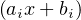
pi(x) - cipi-1(x) ;provided by subclasses. For Laguerre polynomials ai =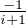
; bi =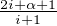
, and ci =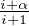
Access the natural log of the normalization constant log(Ni) = log(∫
pi(x)pi(x)dx. For Laguerre
polynomials logNi = .
Access the integrated weight: μ =
| ∫ w(x)dx |
In this section we describe classes for the solution of systems of ordinary, first-order, autonomous ordinary differential equations (ODEs) . These have the form:
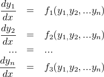
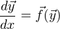
Note that any higher order ODE can be reduced to a set of first-order ODESs, and also that nonautonomous set of first-order ODEs can
be reduced to an autonomous set, see for example John Butcher, Numerical Methods for Ordinary Differential Equations, John
Wiley & sons, West Sussex England (2008). These functions, together with the initial values of the solution vector  0,
determine the solution
0,
determine the solution
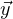
(x). The classes available for flexibly finding an approximate solution therefore create functions. The main class one is the RKIntegrator, which internally uses one or more steppers. Users can instantiate their own steppers in order to control the stepping algorithm or modify tolerances and other algorithmic parameters. The initial values 0 are parameters of the solutions. Other parameters, entering via the differential equations, maybe be involved as
well; if these are required they should be created through a call to RKIntegrator::createControlParameter so that
they may be managed by the RKIntegrator and watched for modification. The approximate solutions are cached in
memory for the sake of speed, and any change to starting value parameters or managed control parameters changes the
solution–and therefore also invalidates the cache. A class tree diagram is shown in Fig. 3. Two kinds of steppers are
provide, a SimpleRKStepper implementing fixed stepsize and an AdaptiveRKStepper which adjustes the stepsize for an
approximately equal tolerance at each step. The latter functions interoperates with either the StepDoublingRKStepper or the
EmbeddedRKStepper, both of which can provide error estimates at each step. The actual stepping algorithm is set by one of the
ButcherTableau classes (for either the SimpleRKStepper or the StepDoublingRKStepper) or an ExtendedButcherTableau (for the
EmbeddedRKStepper).
0 are parameters of the solutions. Other parameters, entering via the differential equations, maybe be involved as
well; if these are required they should be created through a call to RKIntegrator::createControlParameter so that
they may be managed by the RKIntegrator and watched for modification. The approximate solutions are cached in
memory for the sake of speed, and any change to starting value parameters or managed control parameters changes the
solution–and therefore also invalidates the cache. A class tree diagram is shown in Fig. 3. Two kinds of steppers are
provide, a SimpleRKStepper implementing fixed stepsize and an AdaptiveRKStepper which adjustes the stepsize for an
approximately equal tolerance at each step. The latter functions interoperates with either the StepDoublingRKStepper or the
EmbeddedRKStepper, both of which can provide error estimates at each step. The actual stepping algorithm is set by one of the
ButcherTableau classes (for either the SimpleRKStepper or the StepDoublingRKStepper) or an ExtendedButcherTableau (for the
EmbeddedRKStepper).
#include “QatGenericFunctions/RKIntegrator.h”
Description: The RKIntegrator is the main class for ODE integration. To use it, you add differential equations (GENFUNCTIONS of N variables), one equation for each variable, specifying at the same time a starting value and range, in case the starting value should be an adjustable parameter of the solution. When you are finished adding the required N differential equations, you may request the “solution”, which is an const AbsFunction *. The RKIntegrator can also manufacture Parameters; these can be used like ordinary Parameters to construct the differential equations, except that the caching mechanism is informed when the values of these managed Parameters change. It is important to note that the solutions are destroyed together with the RKIntegrator, which must therefore continue to exist for as long as the solutions are in use.
Methods: Constructor. If no RKIntegrator::RKStepper is specified, the RKIntegrator creates an AdaptiveRKStepper with default values of all algorithmic parameters. This in turn uses the EmbeddedRKSTepper with a CashKarpXtTableau.
Add a differential equation governing the evolution of the next variable with independent variable x. This function returns a Parameter representing the starting value of that variable. The Parameter may be held constant, modified; any modification of the Parameter value wipes out the cache since the approximate solution changes. The Parameter is destroyed with the RKIntegrator.
Create a control parameter. The Parameter is checked for modification when the function is evaluated and if it has changed the cache is wiped and the approximate solution reevaluated. If you are considering parameterizing the ODE solutions via their defining equations, you should use this method to create the Parameters. The Parameter is destroyed with the RKIntegrator.
Retrieve the solution to the ODE. This function will now actually change as parameters are changed; this includes both control parameters and starting value parameters. The function is destroyed with the RKIntegrator.
__________________________________________________________________________________________________________
#include “QatGenericFunctions/SimpleRKStepper.h”
Inherits: RKIntegrator::RKStepper
Description: The SimpleRKStepper implements a fixed stepsize together with an integration method specified by a ButcherTableau.
Methods: Constructor, specifying the ButcherTableau and the stepsize:
__________________________________________________________________________________________________________
#include “QatGenericFunctions/AdaptiveRKStepper.h”
Inherits: RKIntegrator::RKStepper
Methods: Constructor. If no AdaptiveRKStepper::EEStepper is specified, it will create its own EmbeddedRKStepper using a CashKarpXtTableau.
The tolerance (default 10-6)
The starting stepsize (default 0.01):
The safety factor. Step size increases are moderated by this factor (default 0.9):
The minimum factor by which a step size is decreased (default 0.0):
The maximum factor by which a step size is increased (default 5.0):
__________________________________________________________________________________________________________
#include “QatGenericFunctions/StepDoublingRKStepper.h”
Inherits: AdaptiveRKStepper::EEStepper
Description: An error-estimating stepping algorithm that works by taking one half-step and one full step. Error extracted from the two results.
__________________________________________________________________________________________________________
#include “QatGenericFunctions/StepDoublingRKStepper.h”
Inherits: AdaptiveRKStepper::EEStepper
Description: An error-estimating stepping algorithm that works by computing two results from intermediate evaluations at each step, each result having its own order-of-convergence. The algorithm is steered by a ExtendedButcherTableau.
Methods: Constructor, taking an ExtendedButcherTableau.
__________________________________________________________________________________________________________
#include “QatGenericFunctions/ButcherTableau.h”
Description: In numerical analysis, a Butcher tableau is table of numbers in a particular format which completely specifies a Runge-Kutte integration scheme. Butcher Tableau are described in John Butcher, Numerical Methods for Ordinary Differential Equations, John Wiley & sons, West Sussex England (2008). The general form is :
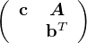
where A is a matrix and b, c are column vectors. The ButcherTableau class presents itself as an empty structure that the user has to fill up. One can blithely fill write into any element of A, b, or c. Space is automatically allocated. The class is not normally used directly; one rather uses subclasses such as EulerTableau, MidpointTableau... (see Fig. 3) which initialize the internals in their constructor; however if one wishes to customize the integration e.g. with higher order methods he/she can do so by subclassing ButcherTableau.
Note: in the current implementation, the matrix A must be lower-diagonal, precluding tableaux which implement implicit integration schemes.
Returns the name:
Returns the order of integration:
Returns the number of steps in the integration procedure
Write access to elements:
Read access to elements:
__________________________________________________________________________________________________________
#include “QatGenericFunctions/ButcherTableau.h”
Description: Implements a Butcher Tableau for the Euler method of ode solution, a first order integration method. See John Butcher, Numerical Methods for Ordinary Differential Equations, John Wiley & sons, West Sussex England (2008) for numerical values.
__________________________________________________________________________________________________________
#include “QatGenericFunctions/ButcherTableau.h”
Description: Implements a Butcher tableau for the midpoint (or RK22) method of ode solution, a second order integration method. See John Butcher, Numerical Methods for Ordinary Differential Equations, John Wiley & sons, West Sussex England (2008) for numerical values.
__________________________________________________________________________________________________________
#include “QatGenericFunctions/ButcherTableau.h”
Description: Implements a Butcher Tableau for the Trapezoid (or RK21) method of ode solution, a second order integration method. See John Butcher, Numerical Methods for Ordinary Differential Equations, John Wiley & sons, West Sussex England (2008) for numerical values.
__________________________________________________________________________________________________________
#include “QatGenericFunctions/ButcherTableau.h”
Description: Implements a Butcher Tableau for the RK31 method of ode solution, a second order integration method . See John Butcher, Numerical Methods for Ordinary Differential Equations, John Wiley & sons, West Sussex England (2008) for numerical values.
__________________________________________________________________________________________________________
#include “QatGenericFunctions/ButcherTableau.h”
Description: Implements a Butcher Tableau for the RK32 method of ode solution, a third order integration method. See John Butcher, Numerical Methods for Ordinary Differential Equations, John Wiley & sons, West Sussex England (2008) for numerical values.
__________________________________________________________________________________________________________
#include “QatGenericFunctions/ButcherTableau.h”
Description: Implements a Butcher Tableau for the Classical fourth-order Runge-Kutta method of ode solution, also called RK41. See John Butcher, Numerical Methods for Ordinary Differential Equations, John Wiley & sons, West Sussex England (2008) for numerical values.
__________________________________________________________________________________________________________
#include “QatGenericFunctions/ButcherTableau.h”
Description: Implements a Butcher Tableau for the three eights rule of ode solution, a fourth-order integration method. See wikipedia for numerical values.
__________________________________________________________________________________________________________
#include “QatGenericFunctions/ExtendedButcherTableau.h”
Description: An extended Butcher tableau is similar to a Butcher tableau, except it is used by an embedded stepping algorithm, in which each step terminates with two estimates of the solution, by combining the intermediate values in two different ways. Typically these alternate estimates are characterized by different order of convergence; the availability of a second estimate of the function allows for error estimation, which is exploited by the EmbeddedRKStepper, within which these classes are used. See John Butcher, Numerical Methods for Ordinary Differential Equations, John Wiley & sons, West Sussex England (2008). An extended Butcher tableau has the form:
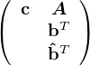
which is similar to the form of an ordinary Butcher tableau with the transpose of an added column vector, , in the final row. The class is not normally used directly; one rather uses subclasses such as HeunEulerXtTableau, FehlbergRK45F2XtTableau... (see Fig. 3) which initialize the internals in their constructor; however if one wishes to customize the integration e.g. with higher order methods he/she can do so by subclassing ExtendedButcherTableau.
Returns the name:
Returns the order(s) of integration:
Returns the number of steps in the integration procedure
Write access to elements:
Read access to elements:
__________________________________________________________________________________________________________
#include “QatGenericFunctions/ExtendedButcherTableau.h”
Inherits: ExtendedButcherTableau
Description: Implements an extended Butcher tableau for the Heun-Euler method, which generates a second-order estimate and a first-order estimate of the solution. See wikipedia for numerical values.
__________________________________________________________________________________________________________
#include “QatGenericFunctions/ExtendedButcherTableau.h”
Inherits: ExtendedButcherTableau
Description: Implements an extended Butcher tableau for the Bogacki-Shampine method, which generates third-order estimate and a second-order estimate of the solution. See wikipedia for numerical values.
__________________________________________________________________________________________________________
#include “QatGenericFunctions/ExtendedButcherTableau.h”
Inherits: ExtendedButcherTableau
Description: Implements an extended Butcher tableau for the FehlbergRK45F2 method, which generates a fourth-order estimate and a fifth-order estimate of the solution. See wikipedia for numerical values.
__________________________________________________________________________________________________________
#include “QatGenericFunctions/ExtendedButcherTableau.h”
Inherits: ExtendedButcherTableau
Description: Implements an extended Butcher tableau for the Cash-Karp method, which generates a fourth-order estimate and a fifth-order estimate of the solution. See wikipedia for numerical values.
__________________________________________________________________________________________________________
The classes in this section apply the automatic derivative system inherent in QatGenericFunctions, with the numerical integration methods of Section 2.4, to classical Hamiltonian systems with no explicit dependence on the time. Such systems are governed by a Hamiltonian, which is a function of the phase space variables ( generalized coordinates qiand generalized momenta pi, i = 1,N) specific to the particular classical system; for example, for the harmonic oscillator in one dimension one has
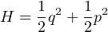
The system is solved by first obtaining Hamiltons’s equations from the Hamiltonian:
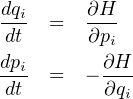
#include “QatGenericFunctions/ClassicalSolver.h”
Description: Abstract base class for Hamiltonian solvers.
Returns the time evolution for a variable (which should be qi or pi) :
Returns the phase space
Returns the Hamiltonian (function of the 2N phase space variables).
Returns the energy (function of time):
This is in the case that the user needs to edit starting values or parameterize the Hamiltonian.
__________________________________________________________________________________________________________
#include “QatGenericFunctions/RungeKuttaClassicalSolver.h”
Description: The Classical::RungeKutta solver implements the interface Classical::Solver, obtaining solutions to Hamiltonian systems using Runge-Kutta integration. Internally it uses RKIntegrator.
Methods: Constructor, which takes a Hamiltonian H, a properly configured PhaseSpace, and (optionally) an RKIntegrator::RKStepper, which allows users full control over the integration scheme and algorithmic parameters thereof.
__________________________________________________________________________________________________________
#include “QatGenericFunctions/PhaseSpace.h”
Description: PhaseSpace is a convenience routine for setting up a set of 2N Genfun::Variables, half of which are generalized coordinates, the other half of which are generalized momenta; and also for setting the starting values of these components. The nested class PhaseSpace::Component behaves like an array of Genfun::Variables, the ithelement of which can be obtained from the subscript operator, operator [].
Nested classes: PhaseSpace::Component
Methods: Constructor. NDIM gives the number of generalized coordinates, which is also equal to the number of generalized momenta:
Get the dimensionality of the phase space (number of generalized coordinates, which is also equal to the number of generalized momenta):
Get the coordinates, which behaves like an array of Genfun::Variables:
Get the momenta, which behaves like an array of Genfun::Variables:
Set starting values for the coordinates or momenta:
Get starting values for the coordinates or momenta:
__________________________________________________________________________________________________________
The classes in this section can be used to search for the roots of a function. If the function you are dealing with is a polynomial, consider using Genfun::Polynomial to obtain the roots in a more robust way.
#include “QatGenericFunctions/RootFinder.h”
Description: RootFinder is the base class for the classes Bisection, NewtonRaphson, and DeflatedNewtonRaphson, which all attempt to locate the roots of a function.
Methods: Return a root, starting from an estimated value:
Read only access to upper and lower bounds:
Read-write access to upper and lower bounds:
__________________________________________________________________________________________________________
#include “QatGenericFunctions/RootFinder.h”
Description: Bisection is a class for root finding using the bisection algorithm.
Methods: Constructor, taking the function whose root is to be found, the tolerance with which the answer is desired, and the maximum number of function calls permitted:
Return a root, starting from an estimated value:
Return the number of calls to the function which has been made during the previous root-finding operation.
Read only access to upper and lower bounds:
Read-write access to upper and lower bounds:
__________________________________________________________________________________________________________
#include “QatGenericFunctions/RootFinder.h”
Description: NewtonRaphson is a class for root finding using the Newton-Raphson algorithm.
Methods: Constructor, taking the function whose root is to be found, the tolerance with which the answer is desired, and the maximum number of function calls permitted:
Return a root, starting from an estimated value:
Return the number of calls to the function which has been made during the previous root-finding operation.
Read only access to upper and lower bounds:
Read-write access to upper and lower bounds:
__________________________________________________________________________________________________________
#include “QatGenericFunctions/RootFinder.h”
Description: DeflatedNewtonRaphson is a class for root finding using the deflated Newton-Raphson algorithm. The class keeps a copy of the original function, from which it removes each root which has been successfully located during a call to the root function. This is known as deflation. Subsequent calls to the root function are meant to return a unique root.
Methods: Constructor, taking the function whose root is to be found, the tolerance with which the answer is desired, and the maximum number of function calls permitted:
Return a root, starting from an estimated value:
Return the number of calls to the function which has been made during the previous root-finding operation.
Read only access to upper and lower bounds:
Read-write access to upper and lower bounds:
QatPlotWidgets is a library for plotting, which is based upon the Qt library , a toolkit for graphical user interfaces and two-dimensional graphics. QatPlotWidgets contains a number of customized QtWidgets, the main one being PlotView, which is an x-y plotter that can handle functions, histograms, and a variety of other plottable objects. The library also contains several dialogs used internally by PlotView, which are “internal” classes will not be documented here. Other user classes which may be of use to users are the RangeDivider classes, which allow for linear, logarithmic, or custom range division. Class tree diagrams for these classes appear in Fig. 4
#include “QatPlotWidgets/PlotView.h”
Inherits: QGraphicsView (Qt library), AbsPlotter (QatPlotting)
Description PlotView is the main plotter class. Since it inherits from QWidget, it can easily be incorporated into a Qt widget hierarchy; since it is a QGraphicsView, arbitrary graphics may be layered onto the PlotView. Various Plottables (See Section 4) can be added to the PlotView using the add(Plottable *) method. These Plottables must remain in scope while the PlotView is active. The Plottables are drawn within the PlotView. And example is shown in Fig. 5. The PlotView has many facilities for changing the style and labelling of plots. Many of these can accessed interactively, too. Right-clicking on the PlotView opens a dialog enabling to change the range, the type of axes (linear or logarithmic), and the domain and range of the plotter.
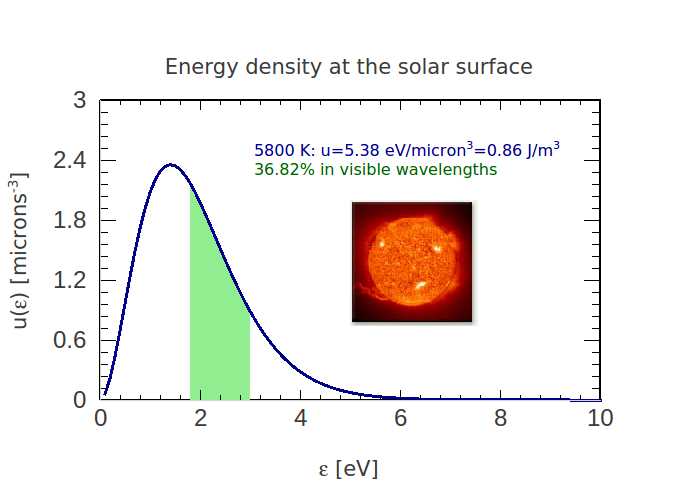
Constructor; this form allows to specify the domain and range of the plotter (through the variable rect); linear or logarithmic x and y axes. If createRangeDivider is false, you can provide your own range divider, e.g. a custom range divider that lets you put any alphanumeric characters on the axes.
Destructor:
Modifiers to set the x or y range divider; mostly used to customize the axis labelling.
Access the bounding rectangle, in the coordinates of the plot:
Add a Plottable to the PlotView:
Access the scene directly, so that arbitrary graphics may be added to the plot:
Determine whether the statistics box is visible:
Determine whether the grid is visible:
Determine whether a ruling at x=0 is visible:
Determine whether a ruling at y=0 is visible
Determine the origin (x,y) of the statistics box:
Determine whether the x- or y- axes are logarithmic:
Determine the fraction of the plot taken up by the statistics box, in x- and y-directions.
Clear the plotter:
Get the text edits holding the text labels (see QTextEdit documentation from Qt library). The vLabel runs vertically up the right hand side of the plotter.
Get the x- and y-axis font (see QFont documentation from the Qt library)
Public slots
Note: a slot is a Qt concept, not a C++ concept, and is not in the C++ language per se. See the Qt documention for more information
on signals or slots, and note that a slot can always be called, just like a normal method.
Turn the grid on or off:
Turn on or off a vertical ruling at x=0:
Turn on or off a horizontal ruling at y=0:
Turn on or off a logarithmic x-axis:
Turn on or off a logarithmic y-axis:
Turn on or off the visibility of the statistics box:
Set the x and y position of the statistics box:
Set the size of the statistics box in x- and y- as a percentage of the PlotView:
Set the domain and the range of the plot:
Save the plot to an output file; if the file extension is .svg it will be saved in svg format, otherwise it will be stored as a pixmap.
Save the plot; prompting user for a filename in a dialog:
Completely redraws the PlotView:
Copies the PlotView to the Qt clipboard:
Print the PlotView. User is prompted for the printer and configuration in a dialog:
Signals: The following signal is emitted by PlotView when the mouse button is clicked somewhere in the plot. It returns the point (in plot coordinates) of the selected point.
__________________________________________________________________________________________________________
#include “PlotWidgets/AbsRangeDivider.h”
Description: Abstract base class and interface for range dividers. Divides a range [minimum,maximum] into subdivisions.
__________________________________________________________________________________________________________
#include “QatPlotWidgets/CustomRangeDivider”
Description: The custom range divider allows to subdivide an interval, and to label the subdivisions, in a custom way which is under the control of the user.
Insert a subdivision. The label is cloned & the clone managed
Insert a subdivision. The label is plain text. If specified, a font is used in the text display.
Three methods to set the range. The calling the first method once is more efficient than calling the last methods twice!
__________________________________________________________________________________________________________
#include “QatPlotWidgets/LinearRangeDivider.h”
Description: The LinearRangeDivider is used divide up a range into intervals of equal size. It is used to label an axis in a linear plot.
Three methods to set the range. The calling the first method once is more efficient than calling the last methods twice!
__________________________________________________________________________________________________________
#include “QatPlotWidgets/LogRangeDivider.h”
Description: The LogRangeDivider is used divide up a range into intervals of equal size. It is used to label an axis in a linear plot.
Three methods to set the range. The calling the first method once is more efficient than calling the last methods twice!
__________________________________________________________________________________________________________
#include “QatPlotWidgets/RangeDivision.h”
Description: The RangeDivision class represents a “tick mark” on an axis; it contains the location of the tick and also a text label.
Accessors:
Modifier (deep copy):
__________________________________________________________________________________________________________
#include “QatPlotWidgets/MultipleViewWindow.h”
Inherits: QMainWindow (see the Qt documentation).
Description: This is a convenience class that lets you put several widgets (particularly PlotViews) together in a tabbed Widget. It is intended for people to be able to do this without knowing that much about Qt. You can of course do the same thing much more flexibly with raw Qt–and much more.
Add another widget (e.g. a PlotView). Creates a tab and a layout for the widget and places it in the MultipleViewWindow.
__________________________________________________________________________________________________________
#include “QatPlotWidgets/MultipleViewWidget.h”
Inherits: QMainWidget (see the Qt documentation).
Description: This is a convenience class that lets you put several widgets (particularly PlotViews) together in a tabbed Widget.
Add another widget (e.g. a PlotView). Creates a tab and a layout for the widget and places it in the MultipleViewWindow.
__________________________________________________________________________________________________________
The QatPlotting library contains graphic primitives and formatting helper classes. These depend upon theQt library , a toolkit for graphical user interfaces and two-dimensional graphics. The PlotView class (Section 3.0.1) extends this toolkit with a plotter, and the QatPlotting classes describe objects which can be placed within the plotter.
This section describes three classes: PRectF is used for determining the range and domain of a plotter; PlotStream and WPlotStream are used for formatting text labels appearing within the plot.
#include “QatPlotWidgets/PRectF.h”
Description: PRectF specificies the rectangular boundaries [xmin,xmax] , y ∈ [ymin,ymax] for a plot.
Methods: Constructor. Creates a rectangle with x ∈ [0,1] and y ∈ [0,1]
Copy constructor (see Qt documentation for QRectF):
Constructor. Creates a rectangle with x ∈ [xmin,xmax] and y ∈ [ymin,ymax]
Accessors:
Modifiers
__________________________________________________________________________________________________________
#include “QatPlotting/PlotStream.h”
Description: The PlotStream class is used to format text which appears in a QTextEdit, particularly within the PlotView class (see section 3.0.1) which provides access to a QTextEdit for the title, the x-, y-, v- axes, and the statistics box. The PlotStream class is used to programmatically fill these text edits with labels of various fonts, sub/superscripts, colored text, etc. Bits of text, or PlotStream manipulators (e.g. PlotStream::Super, used to force superscripts), can then be sent to the PlotStream using the left shift operator <<.
Methods: Constructor. Builds the PlotStream from a QTextEdit:
Shift Operators:
Public member data: Holds the text edit attached to this PlotStream:
Holds a text stream used for formatting of integers, characters, and double precisions. Access is provided in case application programmers have unusual formatting requirements.
PlotStream manipulators (nested classes):
__________________________________________________________________________________________________________
#include “QatPlotting/WPlotStream.h”
Description: The class WPlotStream is identical to PlotStream, except it is used in conjuntion with wide characters (wchar_t), wide strings (std::wstring) and uses an std::wostringstream for formatting. It is used to format text which appears in a QTextEdit, particularly within the PlotView class (see section 3.0.1) which provides access to a QTextEdit for the title, the x-, y-, v- axes, and the statistics box. The WPlotStream class is used to programmatically fill these text edits with labels of various fonts, sub/superscripts, colored text, etc. Bits of text, or WPlotStream manipulators (e.g. WPlotStream::Super, used to force superscripts), can then be sent to the WPlotStream using the left shift operator <<.
Methods: Constructor. Builds the WPlotStream from a QTextEdit:
Shift Operators:
Public member data: Holds the text edit attached to this WPlotStream:
Holds a text stream used for formatting of integers, characters, and double precisions. Access is provided in case application programmers have unusual formatting requirements.
WPlotStream manipulators (nested classes):
__________________________________________________________________________________________________________
#include “QatPlotting/RealArg.h”
Description: RealArg is a namespace containing the classes Eq, Gt and Lt. These are cuts (see Section 2.1.6) which require the value of the argument to be equal to, greater than, or less than (respectively) a value which is specified on the constructor to the class. Instances may be and’ed or or’ed together:
Classes in this namespace intended for use with with PlotFunction1D to restrict the range of the function.
__________________________________________________________________________________________________________
In this section we document a set of classes representing plottable objects such as histograms, functions, various shapes like error ellipses and shaded rectangular regions. These are designed as graphics primitives to appear within the PlotView (section 3.0.1). They inherit from the abstract base class Plotable, described immediatly below, as shown in Fig. 6. The descriptions included here are brief; we leave out the description of some of the internal-use-only methods.
In general the Plotable classes all contain nested properties classes which can be used to adjust the appearance of the Plotable. For example, PlotFunction1D contains the nested class PlotFunction1D::Properties. A typical use case is something like this:
#include “QatPlotting/Plotable.h”
Description: Abstract base class for plotable objects.
Destructor
Get the suggested rectangular boundary (see Qt documentation for QRectF)
Describe to plotter, in terms of primitives:
__________________________________________________________________________________________________________
#include “QatPlotting/PlotBand1D.h”
Description: PlotBand1D draws a shaded region into a plotter, the region is limited by two functions over a specified domain.
Properties: Nested class PlotBand1D::Properties agglomerates the following member data (see Qt documentation)
Methods: Constructor with two bounding functions and a suggested rectangle boundary (see the Qt documentation for QPointF and QRectF):
Constructor with two bounding functions, a suggested rectangular boundary, and a domain restriction (see the Qt documentation for QPointF and QRectF):
Get suggested rectangular boundary (see Qt documentation for QRectF)
Set the properties
Revert to default properties:
Get the properties (either default, or specific)
__________________________________________________________________________________________________________
#include “QatPlotting/PlotErrorEllipse.h”
Description: PlotErrorEllipse draws an ellipse onto the plotter. The ellipse is frequently used to display an error matrix and is specified in terms of elements of a 2 × 2 real symmetric matrix.
Enums: The style determines whether the ellipse contour should be at the Δχ2 = 1 level (ONEUNITCHI2), enclose an area corresponding to one Gaussian standard deviation (ONESIGMA), two Gaussian standard deviations (TWOSIGMA), three Gaussian standard deviations (THREESIGMA), 90% confidence or credibility (NINETY), 95% confidence or credibility (NINETYFIVE), or 99% confidence or credibility (NINETYNINE).
Properties: Nested class PlotErrorEllipse::Properties agglomerates the following member data (see Qt documentation)
Methods: Constructor using the coordinates of the center (x ,y) of the center of the ellipse, the diagonal elements of the error matrix (sx2 and sy2), the off-diagonal elements (sxy) and the ellipse style, i.e. the type of contour which is to be drawn.
Get suggested rectangular boundary (see Qt documentation for QRectF)
Set the properties
Revert to default properties:
Get the properties (either default, or specific)
__________________________________________________________________________________________________________
#include “QatPlotting/PlotFunction1D.h”
Description: PlotFunction1D draws a function of one variable into a plotter.
Properties: Nested class PlotFunction1D::Properties agglomerates the following member data (see Qt documentation for QPen and QBrush). The baseline (default value 0.0) is used when shading the function with a brush pattern; and causes the shading to occur between this baseline value and the values assumed by the function.
Methods: Constructor taking a GENFUNCTION and optionally a suggested rectangular boundary (see the Qt documentation for QPointF and QRectF):
Constructor taking a GENFUNCTION, a domain restriction, and optionally a suggested rectangular boundary (see the Qt documentation for QPointF and QRectF):
Get suggested rectangular boundary (see Qt documentation for QRectF)
Set the properties
Revert to default properties:
Get the properties (either default, or specific)
__________________________________________________________________________________________________________
#include “QatPlotting/PlotHist1D.h”
Description: PlotHist1D draws a one-dimensional histogram.
Properties: Nested class PlotHist1D::Properties agglomerates the following member data (see Qt documentation for QPen and QBrush). The plotStyle variable determines whether the histogram is drawn as a solid line or with symbols, the latter implying that error bars are drawn. The symbolStyle variable determines which of our symbol styles may be drawn, circles, squares, upward pointing triangles, downward pointing triangles, and the symbolSize variable determines the size of the symbol (default=5) may be set.
Methods: Constructor taking a Hist1D:
Get suggested rectangular boundary (see Qt documentation for QRectF)
Set the properties
Revert to default properties:
Get the properties (either default, or specific)
__________________________________________________________________________________________________________
#include “QatPlotting/PlotHist2D.h”
Description: PlotHist2D draws a two-dimensional histogram.
Properties: Nested class PlotHist2D::Properties agglomerates the following member data (see Qt documentation for QPen and QBrush).
Methods: Constructor taking a Hist2D:
Get suggested rectangular boundary (see Qt documentation for QRectF)
Set the properties
Revert to default properties:
Get the properties (either default, or specific)
__________________________________________________________________________________________________________
#include “QatPlotting/PlotKey.h”
Description: PlotKey generates a label key for a plot. The position of the key is given in plot coordinates. Each label in the key consists of a symbol plus a labeling string. Both are specified in the call to PlotKey::add(const Plotable * plotable, const std::string &label). The symbol displayed in the key is taken from the properties of the plotable object.
Methods: Constructor. Constructs and empty PlotKey at position (x,y) in plot coordinates.
Adds a symbol + label to the key:
Obtains the natural “containing rectangle” for the key:
Get and set the label font:
__________________________________________________________________________________________________________
#include “QatPlotting/PlotMeasure.h”
Description: PlotMeasure draws one or more points on a graph with a horizontal error bar. This is most useful for comparing measurements.
Properties: Nested class PlotMeasure::Properties agglomerates the following member data (see Qt documentation for QPen and QBrush). The symbolStyle variable determines which of our symbol styles may be drawn, circles, squares, upward pointing triangles, downward pointing triangles, and the symbolSize variable determines the size of the symbol (default=5) may be set.
Add a point (with error bars) to the set (see the Qt documentation for QPointF):
Get suggested rectangular boundary (see Qt documentation for QRectF)
Set the properties
Revert to default properties:
Get the properties (either default, or specific)
__________________________________________________________________________________________________________
#include “QatPlotting/PlotOrbit.h”
Description: PlotOrbit draws a curve in the x-y plane parameterized by a variable t.
Properties: Nested class PlotOrbit::Properties contains a single piece of member data, a QPen (see Qt documentation).
Methods: Constructor taking two GENFUNCTIONs and a minimum (t0) and maximum (t1) value for the parameter t:
Get suggested rectangular boundary (see Qt documentation for QRectF)
Set the properties
Revert to default properties:
Get the properties (either default, or specific)
__________________________________________________________________________________________________________
#include “QatPlotting/PlotPoint.h”
Description: PlotPoint draws a single point on a graph. Note that if you have many points, PlotProfile is a better choice for performance reasons than multiple PlotPoints.
Properties: Nested class PlotPoint::Properties agglomerates the following member data (see Qt documentation for QPen and QBrush). The symbolStyle variable determines which of our symbol styles may be drawn, circles, squares, upward pointing triangles, downward pointing triangles, and the symbolSize variable determines the size of the symbol (default=5) may be set.
Methods: Construct on the x and y coordinatesof the point:
Get suggested rectangular boundary (see Qt documentation for QRectF)
Set the properties
Revert to default properties:
Get the properties (either default, or specific)
__________________________________________________________________________________________________________
#include “QatPlotting/PlotProfile.h”
Description: PlotProfile draws one or more points on a graph with a vertical error bar.
Properties: Nested class PlotProfile::Properties agglomerates the following member data (see Qt documentation for QPen and QBrush). The symbolStyle variable determines which of our symbol styles may be drawn, circles, squares, upward pointing triangles, downward pointing triangles, and the symbolSize variable determines the size of the symbol (default=5) may be set. The errorBarSize determines the size of the horizontal ridges on the vertical error bar; the drawSymbol flag determines whether to draw a symbol in the middle of the error bar.
Add points with an optional error bar:
Add points with an optional error bar using QPointF (see Qt documentation);
Add points using QPointF (see Qt documentation) with asymmetric error bars;
Get suggested rectangular boundary (see Qt documentation for QRectF)
Set the properties
Revert to default properties:
Get the properties (either default, or specific)
__________________________________________________________________________________________________________
#include “QatPlotting/PlotRect.h”
Description: PlotRect draws a shaded rectangle into a plotter.
Properties: Nested class PlotRect::Properties agglomerates the following member data (see Qt documentation)
Methods: Construct from a QRectF (see Qt documentation):
Get suggested rectangular boundary (see Qt documentation for QRectF)
Set the properties
Revert to default properties:
Get the properties (either default, or specific)
__________________________________________________________________________________________________________
#include “QatPlotting/PlotResidual1D.h”
Description: PlotResidual1D, constructed from a histogram and a function, plots the residuals of the histogram with respect to the function.
Properties: Nested class PlotResidual1D::Properties agglomerates the following member data (see Qt documentation for QPen and QBrush). The symbolStyle variable determines which of our symbol styles may be drawn, circles, squares, upward pointing triangles, downward pointing triangles, and the symbolSize variable determines the size of the symbol (default=5) may be set.
Methods: Constructor taking a Hist1D and a function from which to compute the residual:
Get suggested rectangular boundary (see Qt documentation for QRectF)
Set the properties
Revert to default properties:
Get the properties (either default, or specific)
__________________________________________________________________________________________________________
#include “QatPlotting/PlotText.h”
Description: Displays text in a plot.
Properties: None. The text is drawn according to the QTextDocument (see Qt Documentation)
Methods: Constructor taking an x and y text position and and optional label string (see Qt Documentation for QString)
Get suggested rectangular boundary (see Qt documentation for QRectF)
Set the properties
Revert to default properties:
Get the properties (either default, or specific)
Set the text document, which allows for many formatting options:
__________________________________________________________________________________________________________
#include “QatPlotting/PlotWave1D.h”
Description: PlotWave1D takes a function of two variables an renders it as a time-dependent function of one variable. The first variable is the one to be plotted, the second variable contains the time dependence.
Properties: Nested class PlotWave1D::Properties agglomerates the following member data (see Qt documentation for QPen and QBrush). The baseline (default value 0.0) is used when shading the function with a brush pattern; and causes the shading to occur between this baseline value and the values assumed by the function.
Methods: Constructor taking a GENFUNCTION and optionally a suggested rectangular boundary (see the Qt documentation for QPointF and QRectF):
Constructor taking a GENFUNCTION, a domain restriction, and optionally a suggested rectangular boundary (see the Qt documentation for QPointF and QRectF):
Get suggested rectangular boundary (see Qt documentation for QRectF)
Set the properties
Revert to default properties:
Get the properties (either default, or specific)
__________________________________________________________________________________________________________
The QatDatAnalysis library consists of classes for histograms and tables, classes for input/output of histograms and tables, classes for client/server communcation, and miscellaneous utility classes.
#include “QatDataAnalysis/Attribute.h”
Description: The class Attribute describes a type of data stored within a table.
Enums: enum Type { DOUBLE, FLOAT, INT, UINT, UNKNOWN};
Get the attributed name:
Get the data type name, as a string:
Get the data type as an enumerated type:
The attribute id is the position of the attribute within an AttributeList. Until the list is locked, this is unassigned and set to -1.
Relational operators (lexicographical order)
Equality operator (lexicographical)
__________________________________________________________________________________________________________
#include “QatDataAnalysis/AttributeList.h”
Description: AttributeList is a collection of Attributes. You can add to the list until you lock it. After that, adding attributes generates an exception.
Typedefs: typedef std::vector<Attribute>::const_iterator ConstIterator;
Add an attribute to the list:
Lock the attribute list:
Iterate over the attributes;
Random access:
Size of the attribute list;
__________________________________________________________________________________________________________
#include “QatDataAnalysis/Hist1D.h”
Description: This class describes an ordinary, one-dimensional histogram.
Nested Classes: The class Hist1D::Clockwork contains the internals. They are fully defined in QatDataAnalysis/Hist1D.icc. These internals are accessible if needed–for purposes of persistification, for example. But casual users should eschew them.
Methods: Constructors. The latter creates an anonymous histogram (name: Anonymous);
Accumulate data:
Properties of the container:
Properties of the bins:
Stored data:
Statistical properties of the data:
Operations:
Clear the histogram:
Get the internals:
Remake from the internals:
__________________________________________________________________________________________________________
#include “QatDataAnalysis/Hist1DMaker.h”
Description Hist1DMaker is a class that lets you make a Hist1D from a Table. It uses a function of the quantities in the Table to do so. See Table::symbol() for how to access these quantities, and Section 2, particularly Subsection 2.2.50for more detailed information on building the function. An optional second function can be used to assign a weight (based again on quantities in the Table) to each entry.
Action:
__________________________________________________________________________________________________________
#include “QatDataAnalysis/Hist2D.h”
Description: This class describes a two-dimensional histogram or scatterplot.
Nested Classes: The class Hist2D::Clockwork contains the internals. They are fully defined in QatDataAnalysis/Hist2D.icc. These internals are accessible if needed–for purposes of persistification, for example. But casual users should eschew them.
Accumulate Data:
Properties of the container:
Properties of the bins:
Stored data:
Statistical properties of the data:
Operations
Clear
For accessing bins:
Get the internals:
Remake the histogram from the internals:
__________________________________________________________________________________________________________
#include “QatDataAnalysis/”
Description: Hist2DMaker is a class that lets you make a Hist2D from a Table. It uses two functions of the quantities in the Table to do so. See Table::symbol() for how to access these quantities, and Section 2, particularly Subsection 2.2.50for more detailed information on building the function. An optional third function can be used to assign a weight (based again on quantities in the Table) to each entry.
Action:
__________________________________________________________________________________________________________
#include “QatDataAnalysis/HistogramManager.h”
Description A HistogramManager is a heterogenous collection of Hist1Ds, Hist2Ds, Tables, and other HistogramManagers. These may be organized into an acyclic graph (tree).
Get name:
Iteration:
Object location:
Object creation:
Object removal:
__________________________________________________________________________________________________________
#include “QatDataAnalysis/HistSetMaker.h”
Description: The HistSetMaker schedules one or more histograms to be created from a Table in a single pass. The whole set of histograms is created within an output directory. This is faster than making the individualy using Hist1DMaker and Hist2DMaker multiple times. To use this class, first schedule the histograms and then execute the list of schedule actions.
Execute the list of scheduled actions. The Table t is the source of the data, the HistogramManager * manager is a pointer to the HistogramManager within which the output histograms are created.
Schedule Hist1D creation using a function f of the quantities in the Table to do so. See Table::symbol() for how to access these quantities, and Section 2, particularly Subsection 2.2.50for more detailed information on building the function. An optional second function weight can be used to assign a weight (based again on quantities in the Table) to each entry:
Schedule Hist2D creation using a two functions fX and fY of the quantities in the Table to do so. See Table::symbol() for how to access these quantities, and Section 2, particularly Subsection 2.2.50for more detailed information on building the function. An optional third function weight can be used to assign a weight (based again on quantities in the Table) to each entry:
Access the number of Histograms:
Access the names of the Histograms:
__________________________________________________________________________________________________________
#include “QatDataAnalysis/Projection.h”
Description: Projection is an class used to project data from a Table into a smaller Table, consisting of a subset of the quantities that form the Table. The names of the attributes to be projected are added to the Projection.
Operation on Table
Add a datum
__________________________________________________________________________________________________________
#include “QatDataAnalysis/Selection.h”
Description The Selection class is for thinning a Table by applying a cut to each row, based upon the contents of the row. The cut is specified in the constructor. The most common cut to pass is a TupleCut (subclass of Cut<Tuple>).
Operation on Table
__________________________________________________________________________________________________________
#include “QatDataAnalysis/Table.h”
Description: A Table is an object which pretends to be an array of Tuples. In reality, the Tuples may actually be disk resident, depending on how the Table was instantiated or otherwise obtained. If you instantiate a Table yourself its Tuples will be memory resident. If you use HistogramManager::newTable or read from a file using an IODriver (see Section 5.2.1) it may be disk-resident. The Table class allows to create Tables, store data in Tables, access the data, and create functions which compute derived quanties and/or cut upon the data, through the use of Genfun::GENFUNCTIONS.
Get the title:
Getting the data into the Table. Sets values and builds header at same time.
Capture, returning a link to the constant Tuple. (Note, a TupleConstLink is a smart pointer to a Tuple, which is a reference counted object. Just dereference the TupleConstLink to get at the Tuple. It is actually a ConstLink<Tuple> (see Section 5.4.1). We don’t describe it in any more detail.).
Get the size of the table (number of tuples):
Getting the data out of the Table (Note, a TupleConstLink is a smart pointer to a Tuple, which is a reference counted object. Just dereference the TupleConstLink to get at the Tuple. It is actually a ConstLink<Tuple> (see Section 5.4.1)We don’t describe it in any more detail.):
Alternate. Convenient but slow.
Print:
Get the size of the table (number of attributes):
Get Attributes:
Get the attribute symbol. For building functions of Tuples, using Genfun::GENFUNCTIONS .
Operations:
Copy the Table (which may be disk-resident) to a simple memory resident version:
__________________________________________________________________________________________________________
#include “QatDataAnalysis/Tuple.h”
Description: The Tuple class represents a single row of a table. It can hold a variety of different data types and provides access to them. Tables build tuples and monger tables. The way in which you get data out of a data is to call one of the overloaded read methods. You can then check the status to see whether the read succeeded:
If the data type of datum i is wrong, the read will fail. This provides a way of detecting data type, which is not really recommended for repeated accesses if speed is an If speed is an issue, the datatype should be determined (say, from the table) and the fastread method should be used.
And then there is a third way to access the information for very fast operations on double precision representations of data:
Access to the attributeList (where header info lives):
Print method:
Check status of last operation:
Read in an int:
Read an unsigned int:
Read a double:
Read a float:
Access to values:
Access to a double precision rep of all quantities. The quantities are then cached.
Uncache. Erases the cache of values stored as double precision numbers.
__________________________________________________________________________________________________________
#include “QatDataAnalysis/TupleCut.h”
Description: The TupleCut is a cut used to select Tuples from a Table. See also the class Selection. It can window on quantities in the Tuple, and also be used in Boolean expressions.
Enums: Greater than, less than, greater than or equal to, less than or equal to, not applicable.
Methods: Constructor. Constructs with a function and an upper and lower value:
Constructor, used as in: TupleCut cut (f, TupleCut::GT, 0) or TupleCut cut (f, TupleCut::LT, 0):
__________________________________________________________________________________________________________
#include “QatDataAnalysis/Value.h”
Description: A Value is a class for holding data of arbitary size in an array of bytes. It is essentially for internal use.
Return as a byte array:
Zero the value:
Set the value:
__________________________________________________________________________________________________________
#include “QatDataAnalysis/”
Description: A collection class for Values.
Destructor:
Add an attribute to the list:
Iterate over the attributes;
Random access:
Size of the attribute list;
Two input/output classes persisify HistogramManagers holding Hist1Ds, Hist2Ds, Tables and other HistogramManagers. These classes are IOLoader and IODriver. They provide a universal interface for input and output, as well as flexibility in determining the data format. An alternative to using these classes directly is to use the classes HIOZeroToOne, HIOOneToOne, HIONToOne, etc., which are described below.
#include “QatDataAnalysis/IODriver.h”
Description: An abstract base class for input/output drivers, which are loaded dynamically. These may include HDF5Driver and RootDriver, depending upon installation options.
Creates a New Histogram manager.
Open exisiting Manager:
Close the file:
Write out contents of a histogram manager (created from this driver, see newManager, above) to the file.:
__________________________________________________________________________________________________________
#include “QatDataAnalysis/”
Description: This class opens a driver for input and output of histograms and tables. The name of the driver (i.e RootDriver, HDF5Driver) can be specficied; The search path for drivers is specified in LD_LIBRARY_PATH. If that is not defined, then the search path defaults to /usr/local/lib.
Get a pointer to the IO driver. Valid names are “HDF5Driver” and “RootDriver”. Whether these are available depends upon installation options.
The client/server classes Socket, ClientSocket, ServerSocket are used for establishing bidirectional communication between processes. They are adapted from the examples in Rob Tougher’s article in the Linux Journal, accessible online as http://tldp.org/LDP/LG/issue74/tougher.html. That article also describes how to use them.
#include “QatDataAnalysis/ClientSocket.h”
Description: Class for interprocess communication, used by the client program.
Methods: Constructor, taking the host name and the port number of the server with whom to connect:
Write an object or builtin datatype to the socket. Writes sizeof(T) bytes to the socket starting at & T. Best reserved for ordinary structures containing no pointers.
Read an object or builtin datatype from the socket. Reads sizeof(T) bytes from the socket and writing them to the memory located at & T. Best reserved for ordinary structures containing no pointers.
__________________________________________________________________________________________________________
#include “QatDataAnalysis/ServerSocket.h”
Description: Class for interprocess communication, used by the server program.
Methods: Constructor. Make a ServerSocket listening on a specified port:
Constructor:
Write an object or builtin datatype to the socket. Writes sizeof(T) bytes to the socket starting at & T. Best reserved for ordinary structures containing no pointers.
Read an object or builtin datatype from the socket. Reads sizeof(T) bytes from the socket and writing them to the memory located at & T. Best reserved for ordinary structures containing no pointers.
Accept a connection request from a client. Further transactions are handled through newSocket, which is initialized after the routine is called.
__________________________________________________________________________________________________________
#include “QatDataAnalysis/Socket.h”
Description: Base class for ClientSocket and ServerSocket.
Server initialization
Client initialization
Data Transmission
#include “QatDataAnalysis/ConstLink.h”
Description: Smart links to reference-counted pointers. When the pointer is deleted it decrements the reference count of the object it points to.
Copy Constructor
Constructor
Destructor
Assignment
Equality
Inequality
Relational operator
Relational operator
Relational operator
Relational operator
Dereference: (*t).method();
Dereference: t->method()
Check pointer validity: if (t) {...}
__________________________________________________________________________________________________________
#include “QatDataAnalysis/Link.h”
Inherits: template<class T> ConstLink
Description: Link<T> is like a ConstLink<T>, except it gives non-const access to the object to which it points.
Promotion:
Construct from a pointer:
Destructor:
Assignment:
Dereferencing operations:
__________________________________________________________________________________________________________
#include “QatDataAnalysis/RCSBase.h”
Description: Base class for reference counted, squeezable objects. The reference count may be incremented or decremented by clients. When the reference count returns to zero, the object deletes itself. In addition, subclasses may implement a uncache method, which cleans a cache or “squeezes” the object.
Increment reference count
Decrement the reference count. If it decreases to zero, object is deleted. Uncache is called upon deletion.
Returns the reference count
This method does nothing, but subclasses have a hook which allows them to shrink themselves upon demand.
__________________________________________________________________________________________________________
#include “QatDataAnalysis/Query.h”
Description This class is based upon the Fallible class from Barton & Nackman’s "Scientific and Engineering C++," Addison-Wesley, 1994. A Query<T> object is used to return the result of a query that can fail. The default constructor creates an invalid query, whereas the constructor taking an object of type T creates a valid query. The Query<T> can be tested for validity, and it can cast itself to a T. However, Query<T> throws an exception if an invalid query is cast. This template class is a little more clean than returning -999, which happened a lot in the past and which is still comon practice. It protects the user from blithely using the value of a failed query, by throwing an exception when that happens.
Methods: Constructor. Creates a valid query.
Default constructor. Creates an invalid query.
Cast operator to T:
Test Validity
__________________________________________________________________________________________________________
#include “QatDataAnalysis/OptParse.h”
Description: Convenience class for parsing command line options for a program taking no input histogram files and writing one output histogram file. The file format is determined by the I/O driver, which is either given as an argument to the constructor, or determined by the environment variable QAT_IO_DRIVER,or by default taken to be the HDF5Driver. The two options currently implemented are RootDriver (root format) or HDF5Driver (HDF5 format). The command line should minimally look like:
Public Members: The output histogram manager. No need to write or to close! This happens automatically in the destructor.
Verbose flag:
Parse the command line:
__________________________________________________________________________________________________________
#include “QatDataAnalysis/OptParse.h”
Description: Convenience class for parsing command line options for a program taking one input histogram files and writing one output histogram file. The file format is determined by the I/O driver, which is either given as an argument to the constructor, or determined by the environment variable QAT_IO_DRIVER,or by default taken to be the HDF5Driver. The two options currently implemented are RootDriver (root format) or HDF5Driver (HDF5 format). The command line should minimally look like:
Public Members: The output histogram manager. No need to write or to close! This happens automatically in the destructor.
The input histogram manager:
Verbose flag:
Parse the command line:
__________________________________________________________________________________________________________
#include “QatDataAnalysis/OptParse.h”
Description: Convenience class for parsing command line options for a program taking one input histogram file and writing no output histogram files. The file format is determined by the I/O driver, which is either given as an argument to the constructor, or determined by the environment variable QAT_IO_DRIVER,or by default taken to be the HDF5Driver. The two options currently implemented are RootDriver (root format) or HDF5Driver (HDF5 format). The command line should minimally look like:
Public Members: The input histogram manager.
Verbose flag:
Parse the command line:
__________________________________________________________________________________________________________
#include “QatDataAnalysis/OptParse.h”
Description: Convenience class for parsing command line options for a program taking N input histogram files and writing no output histogram files. The file format is determined by the I/O driver, which is either given as an argument to the constructor, or determined by the environment variable QAT_IO_DRIVER,or by default taken to be the HDF5Driver. The two options currently implemented are RootDriver (root format) or HDF5Driver (HDF5 format). The command line should minimally look like:
Public Members: The input histogram manager.
Verbose flag:
Parse the command line:
__________________________________________________________________________________________________________
#include “QatDataAnalysis/OptParse.h”
Description: Convenience class for parsing command line options for a program taking N input histogram files and writing one output histogram file. The file format is determined by the I/O driver, which is either given as an argument to the constructor, or determined by the environment variable QAT_IO_DRIVER,or by default taken to be the HDF5Driver. The two options currently implemented are RootDriver (root format) or HDF5Driver (HDF5 format). The command line should minimally look like:
Public Members: The input histogram manager.
The output histogram manager:
Verbose flag:
Parse the command line:
__________________________________________________________________________________________________________
#include “QatDataAnalysis/OptParse.h”
Description: This class extracts numerical inputs from the command line and returns them as double precision numbers. If you need an integer, you will have to cast. The class allows you to declare a number of variables called whatever you like, e.g. Tom, Dick, and Harry. Then it helps to extract numerical values for those parameters from a command line like:
Declare a parameter (name, doc, value)
Then override with user input:
Print the list of parameters:
Get the value of a parameter, by name:
__________________________________________________________________________________________________________
The classes in this section are used for data modeling, i.e. fitting. The QatDataModeling library depends upon the CERN MINUIT package (MINUIT Function Minimization and Error Analysis: Reference Manual Version 94.1 F. James 1994 CERN-D-506, CERN-D506 ), and therefore on the Fortran runtime library, libgfortran.
#include “QatDataModeling/ChiSq.h”
Inherits: Genfun::AbsFunctional
Description: Functional that computes the χ2 of a function with respect to some measured points. The measured points have an abscissa and an ordinate, the ordinate has an associated error. Points are to be added to the ChiSq first, then the ChiSq value of the function can be computed.
Add a point with an error bar:
Evaluate the χ2 w.r.t a function:
__________________________________________________________________________________________________________
#include “QatDataModeling/HistChi2Functional.h”
Inherits: Genfun::AbsFunctional
Description: Functional that computes the χ2 of a function with respect to a Hist1D.
Methods: Constructor. The upper and lower limits if given specify the range over which points in the histogram contribute to the χ2.The integrate flag determines whether the function is to be integrated over the bin; otherwise it is simply evaluated at the center of the bin.
Evaluate χ2 of a function w.r.t the histogram
__________________________________________________________________________________________________________
#include “QatDataModeling/HistLikelihoodFunctional.h”
Inherits: Genfun::AbsFunctional
Description: Functional that computes the -2ln of a function with respect to a Hist1D. This is used in a binned likelihood fit.
Methods: Constructor. The upper and lower limits if given specify the range over which points in the histogram contribute to the χ2.The integrate flag determines whether the function is to be integrated over the bin; otherwise it is simply evaluated at the center of the bin.
Evaluate the -2ln of a function w.r.t the histogram
__________________________________________________________________________________________________________
#include “QatDataModeling/MinuitMinimizer.h”
Description: An interface to MINUIT which minimizes a function with respect to parameters. Assuming that the function to be minimized is a χ2 or a -2ln, it also returns a full error matrix on the parameters. This class goes not give very fine control over MINUIT, only basic functionality.
Add a parameter. Minuit minimizes the statistic w.r.t the parameters.
Add a statistic: a function, and a functional (e.g. Chisquared, Likelihood)
Add a statistic: a (Gaussian) constraint or similar function of parameters.
Tell minuit to minimize this:
Get the parameter value:
Get the parameter error:
Get the functionValue
Get the status code (0: error matrix not calculated; 1: Diagonal approximation, error matrix not accurate; 2: Full matrix, diagonal elements forced positive-definite; 3: Full accurate covariance matrix.
Get all of the values, as a vector:
Get all of the errors, as a matrix:
Get information on parameters:
Get Parameter:
Get Parameter
Set the minimizer command (nominally "MINIMIZE").
__________________________________________________________________________________________________________
#include “QatDataModeling/ObjectiveFunction.h”
Description: Abstract base class for an object that returns a value through the function call operator. This is used to interface code to a minimizer, which minimized the value of the ObjectiveFunction. Usually, this is with respect to parameters that may be members of class derived from ObjectiveFunction.
Function call operator. If you subclass you must override.
__________________________________________________________________________________________________________
#include “QatDataModeling/TableLikelihoodFunctional.h”
Inherits: Genfun::AbsFunctional
Evaluate Likelihood of a function w.r.t the data. The function should be constructed from the table, from variables obtained using the Table::symbol(const std::string & ) method. See Section 5.1.11.
__________________________________________________________________________________________________________
QatInventorWidgets introduces a 3D polar function plotter and currently this is the only class in the library. To use this class you will need to add
to the project file qt.pro.
#include “QatInventorWidgets/PolarFunctionView.h”
Description: This class provides a view for functions on a sphere. The function is a GENFUNCTION of two variables, the first one being cosθ and the secon one being ϕ. It is a 3D widget that can be flattened into a Mollweide projection, so there are two viewing modes that can be toggled with the u-key, x, y, and z axes which can be toggled with the a-key, and lattitude/longitude lines which can be toggled with the l-key. The view may be saved (s-key), printed (p-key), and the “squish factor” mapping the function value onto a color value may be changed (h-key). The class is a QWidget, and slots allow for these changes to be made programmatically.
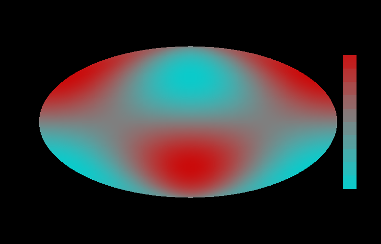
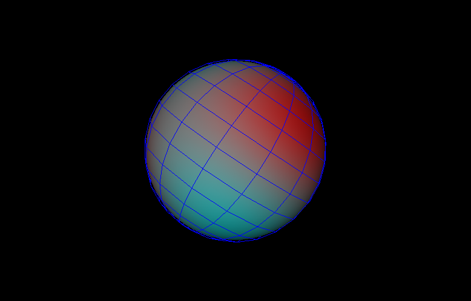
Add a function which must be a function of two variables (cosθ,ϕ), and be maintained in the client code while the viewer is active.
The PolarFunctionView contains an SoQtExaminerViewer, accessed by this method:
Save, pops a dialog for interactive file selection:
Print:
Set the squish factor, which maps the function value onto a color.
Refresh the sphere, triggering re-rendering:
Toggle the display of lattitude and longitude lines:
Toggle the display of x, y, z axes:
Toggle whether the function is plotted on a sphere or unrolled into Mollweide (elliptical) projection: